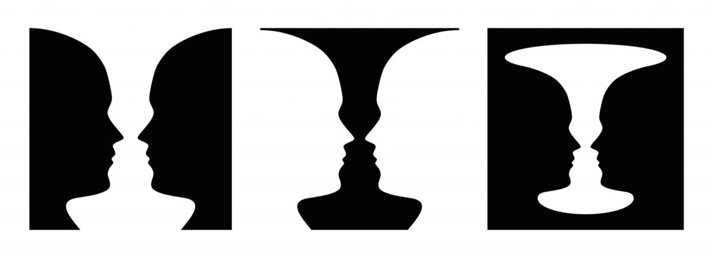
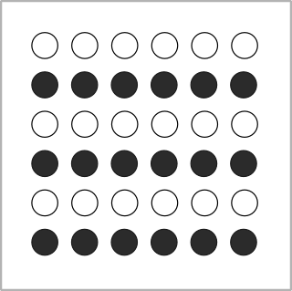
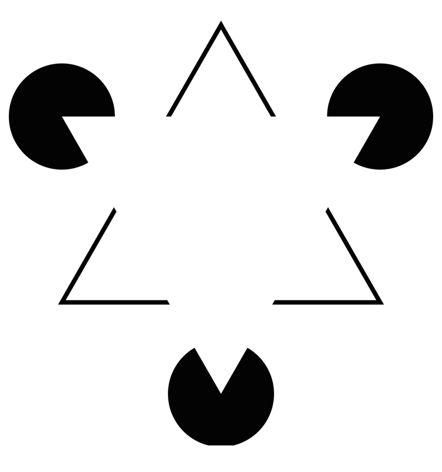
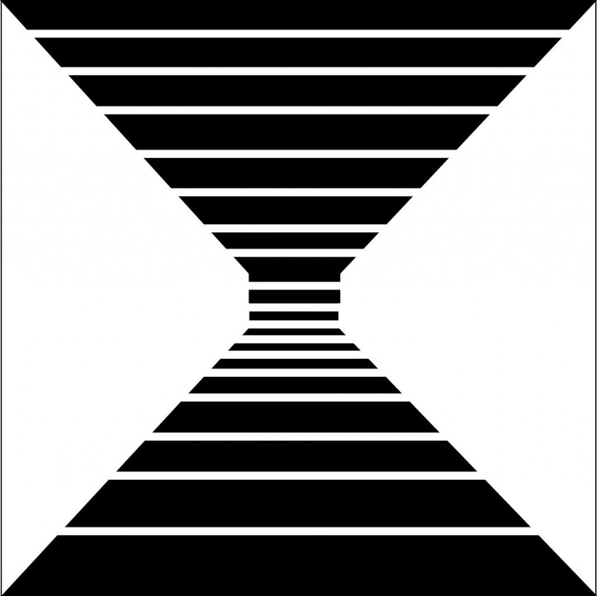

Leyes de Gestalt
¿Qué son las leyes de Gestalt?
Las leyes de Gestalt son principios psicológicos que explican cómo las personas percibimos visualmente los elementos como partes de un todo organizado, en lugar de como partes separadas e inconexas. Estas leyes provienen de la psicología de la Gestalt, una corriente que surgió a principios del siglo XX en Alemania.
Proximidad
La ley de semejanza de la Gestalt dice que tendemos a agrupar los elementos que se parecen entre sí —ya sea por forma, color, tamaño, textura u otro rasgo visual—, percibiéndolos como parte de un mismo conjunto o patrón.Por ejemplo: Si ves una fila de círculos y cuadrados, todos del mismo tamaño, tu cerebro agrupará los círculos por un lado y los cuadrados por otro, aunque estén mezclados físicamente.
.png)
Semejanza
La ley de semejanza de la Gestalt establece que los elementos que son visualmente parecidos entre sí tienden a ser percibidos como parte de un mismo grupo o patrón. Cuando vemos objetos similares (por color, forma, tamaño o textura), nuestro cerebro los agrupa automáticamente, aunque estén separados o mezclados con otros diferentes.
Continuidad
La ley de continuidad de la Gestalt dice que percibimos los elementos que siguen una misma dirección o línea como parte de un mismo conjunto o flujo visual. Cuando varios objetos se alinean o siguen una curva, nuestro cerebro tiende a verlos como una secuencia continua, no como partes separadas.
.png)
Cierre
La ley de cierre de la Gestalt establece que tendemos a percibir una figura completa aunque falten partes de ella. Nuestro cerebro rellena los espacios vacíos para formar una imagen coherente y cerrada. Cuando una forma está incompleta, nuestra mente la completa automáticamente para darle sentido.
Figura-Fondo
La ley de figura-fondo de la Gestalt dice que percibimos los elementos visuales dividiendo lo que vemos en “figura” (el objeto principal) y “fondo” (el espacio detrás o alrededor).Nuestro cerebro distingue qué es el objeto que llama la atención y qué es el fondo sobre el que se encuentra, aunque ambos estén en la misma escena.
Simetria y Orden
La ley de simetría y orden de la Gestalt indica que percibimos los elementos equilibrados y organizados como un conjunto armonioso. Los objetos simétricos se perciben como relacionados, mientras que nuestro cerebro tiende a interpretar las formas complejas de la manera más simple y ordenada posible, facilitando la comprensión y creando una sensación de estabilidad y claridad visual.
Region común
La ley de simetría y orden de la Gestalt indica que percibimos los elementos equilibrados y organizados como un conjunto armonioso. Los objetos simétricos se perciben como relacionados, mientras que nuestro cerebro tiende a interpretar las formas complejas de la manera más simple y ordenada posible, facilitando la comprensión y creando una sensación de estabilidad y claridad visual.
.png)
Destino Común
La ley de destino común de la Gestalt indica que los elementos que se mueven o apuntan en la misma dirección tienden a percibirse como parte de un mismo grupo. Nuestro cerebro agrupa automáticamente los objetos con un patrón de movimiento o trayectoria compartida, facilitando la comprensión de relaciones y la organización visual.
.png)